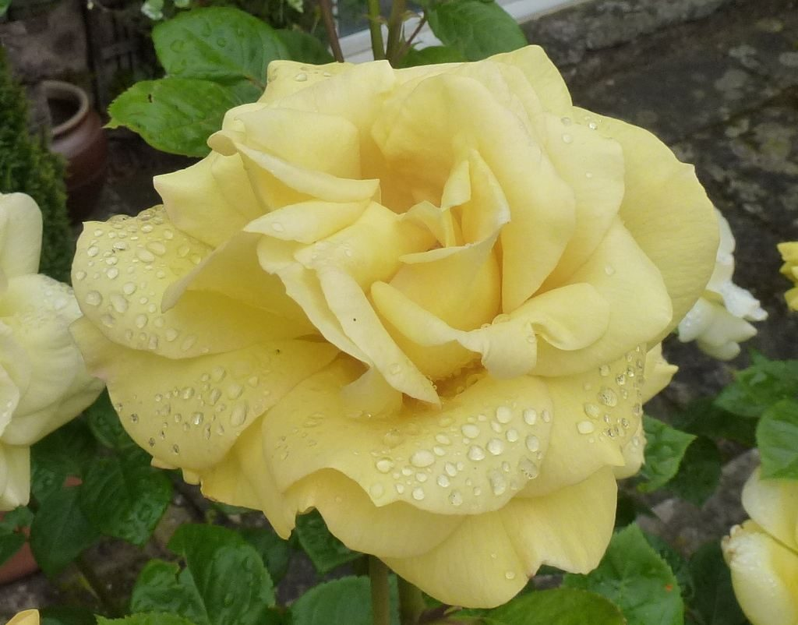
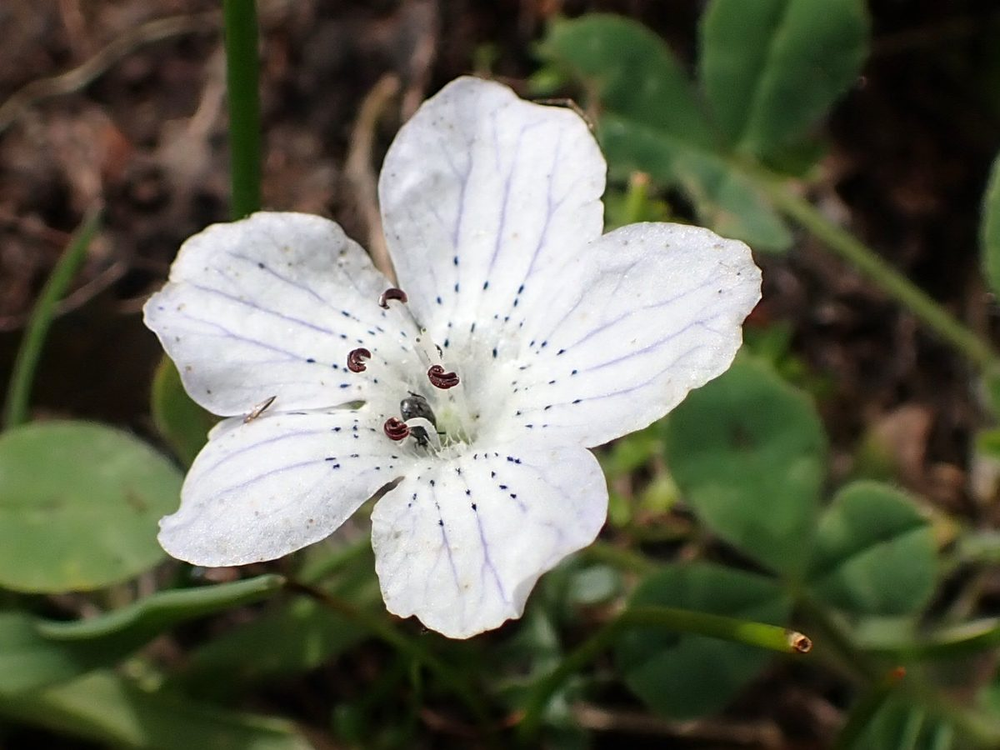
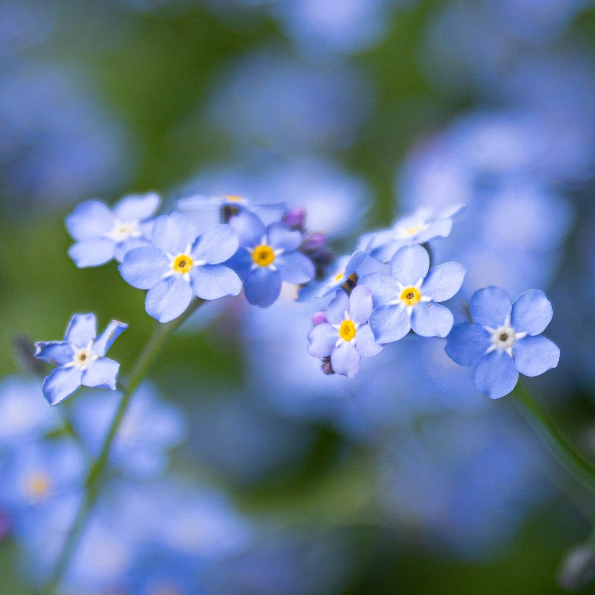
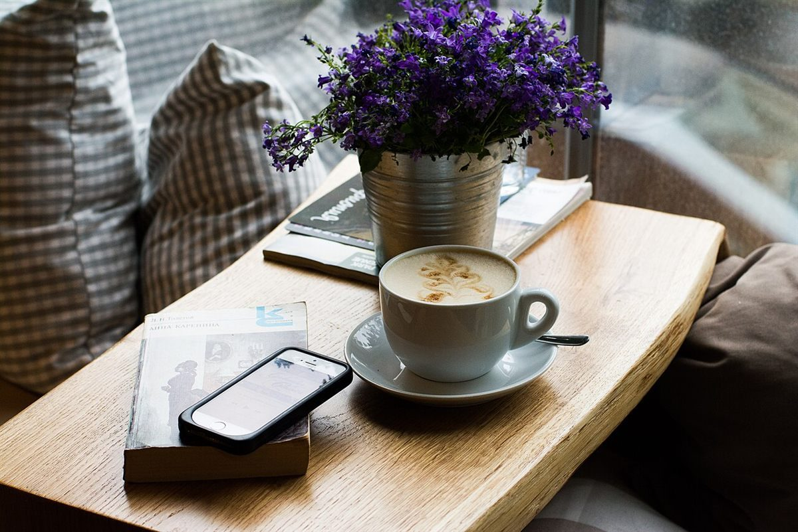

店のこと
店のこと
お店について確認できているのは、所在地・電話番号・Instagramのアカウントです。
「想像してみる」部分は制作側が考えたもので、お店の実際の様子・考え・メニューとは関係がありません。
確認できていること
- 店名は「cafe LA cachette 花花」、業種はカフェ
- 所在地は〒018-0311 秋田県にかほ市金浦金浦108-1
- 電話番号は 0184-44-8318
- Instagramは @cachette8787
- 営業時間・定休日・メニュー・価格・ご予約・駐車場は準備中

想像してみる
名前をめくってみる
由来は分かりません。制作側は「cachette」を「隠し場所」という意味の言葉と受け取り、「花花」と並べて、2枚で1組の札のようだと連想しました。伏せてあるものをそっとめくるような名前だな、と。お店の実際の姿ではありません。


